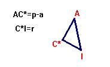
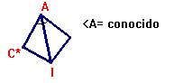
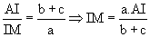
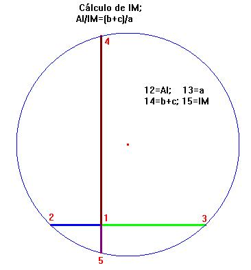
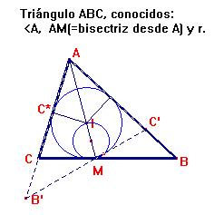

Problema 100.-
Dado un lado l, la altura correspondiente h y el radio de la circunferencia inscrita, r, construir el triángulo.
Rey Pastor, J. (1905): Revista Trimestral de Matemáticas. Zaragoza. (Tomo V. p. 239)
(El editor agradece a Natividad Gómez Pérez, Directora de la
Biblioteca de Matemáticas de la Universidad de Sevilla la obtención del
documento que se encuentra en la Universitat Politecnica de Catalunya.)
2ª Solución de Florentino Damián Aranda Ballesteros, profesor del IES Blas Infante de Córdoba. (19 de Junio de 2003):
Usaremos la siguiente notación más cómoda para nuestro empeño:
Dados a= lado a,
ha= altura correspondiente al lado a, y r = radio de la circunferencia
inscrita, se pide que construyamos el triángulo ABC.
Sea S(ABC) el área del triángulo ABC. Entonces como S(ABC)= 1/2×a×ha = p×r; donde p=1/2×(a+b+c) tenemos que p=(a×ha)/(2×r)
y, así podemos obtener y construir fácilmente los segmentos
de longitudes p, 2×p-a =
b+c y p-a.
Con los segmentos p-a y r como catetos, construimos el triángulo rectángulo AC*I como sigue:
|
 |
 |
|
y así, junto a su imagen simétrica respecto de AI, obtenemos tanto el valor del ángulo <A como la longitud del lado AI. |
|
|
Sabemos que, por el teorema del incentro en el triángulo ABC:  donde M es el pie de la bisectriz interna trazada desde el ángulo A |
 |
De modo que, ahora el problema pasa a ser la construcción del triángulo ABC, con los datos así obtenidos como son:
El ángulo <A, p-a, ra y la longitud de la bisectriz va. Esta construcción se realiza sin dificultad, una vez que, fijada la posición del punto M, tracemos las tangentes a la circunferencia inscrita.

Saludos de F. Damián Aranda Ballesteros.